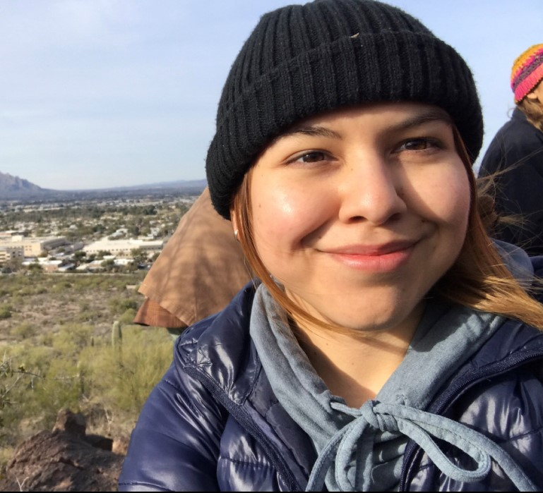
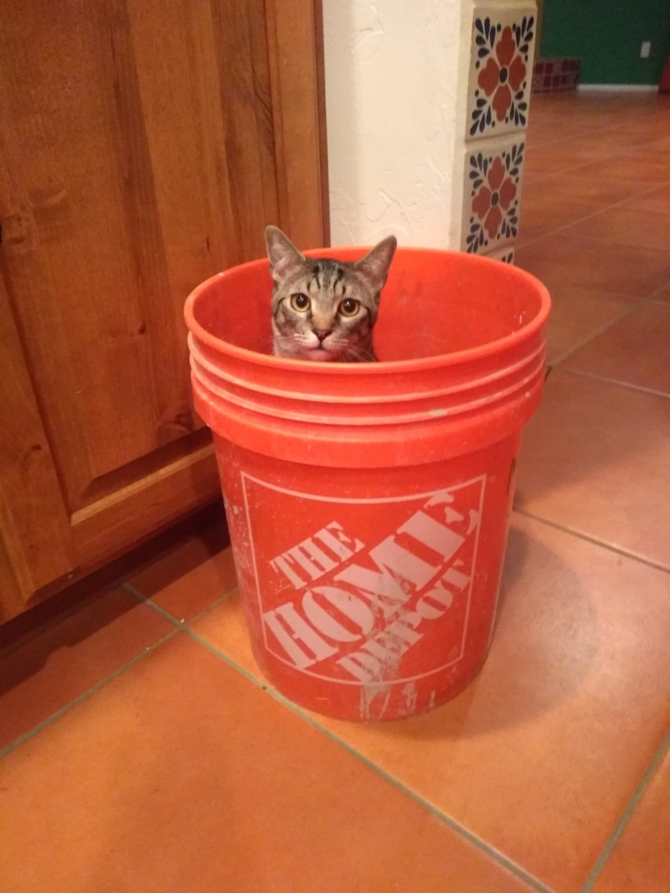

Undergraduate Students

Shaila J. Rios Dominguez, Undergraduate student
I am an undergraduate student pursuing a degree in Environmental Science with an emphasis in soil, air, and water. In the CESM Plant-Soil Environment lab, I am assisting on a native plant project that focuses on identifying heavy-metal accumulating and tolerant plant species. As a Tucson local, I am interested in the health of the community’s environment and residents, and I hope to be able to contribute to the improvement of the city’s overall quality and sustainability. Additionally, I enjoy hikes, painting, and visual/musical arts.
e-mail: sriosdomingulez@.arizona.edu

Pizdzielec Pesto
e-mail:pizdzielec@arizona.edu